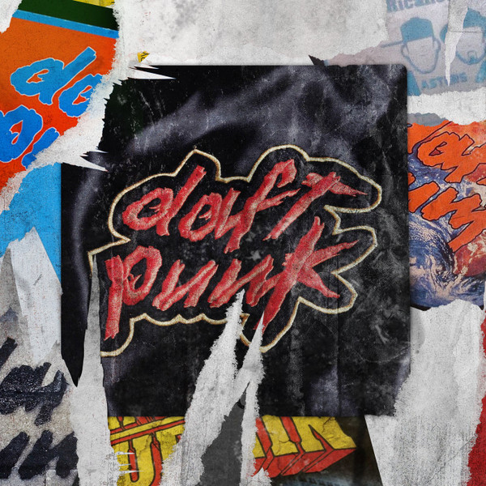

Ingredients List
- Around the World (l:Cube Remix) - 6:19
- Revolution 909 (Roger Sanchez & Junior Sanchez Remix) - 8:56
- Around the World (Motorbass Vice Mix) - 6:37
- Burnin' (DJ Sneak Main Mix) - 9:11
- Revolution 909 (Revolution A Cappella) - 1:05
- Around the World (Kenlou Mix) - 7:51
- Around the World (Mellow Mix) - 7:51
- Around The World (Tee's Frozen Sun Mix) - 7:57
- Burnin' (Slam Mix) - 6:47
- Burnin' (Ian Pooley Cut up Mix) - 5:21